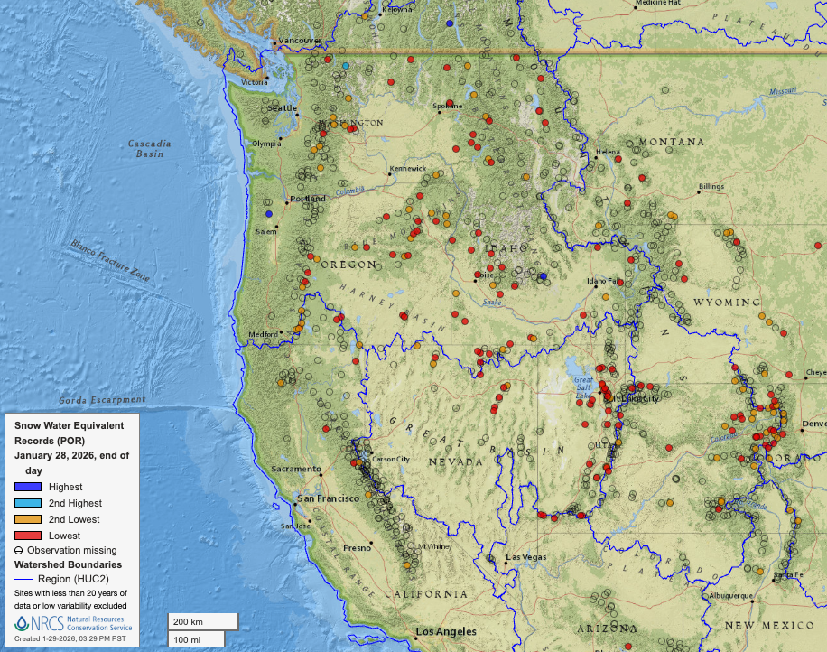
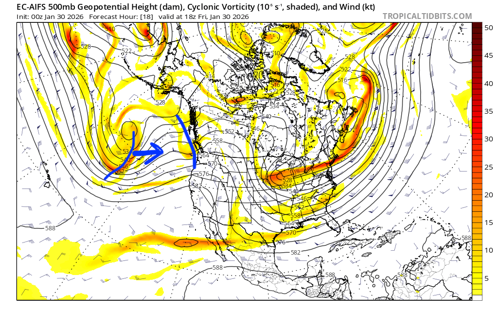
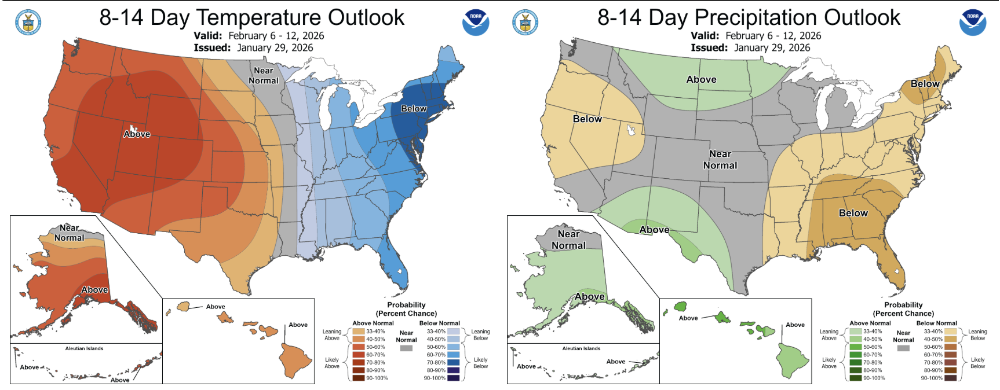

🔄❄️ Ahoy, a pattern change is here: Is this the refresh we've been waiting for?
Welcome to The Dendritic Growth Zone!
Past Week's Recap
Contrary to what you might have heard from other prominent weather blogs in recent days, this dry period in Western Washington has been truly unprecendented for winter (Dec-Feb). Yes, there have been many other week+ dry spells in the past. However, as we can see in the table below for Sea-Tac Airport, this is the longest streak of days without precipitation on record in winter (14 days). This is of course, not a mountain site but we don't have many mountain sites with long term climate records. A dominant upper-level ridge of high pressure centered off the US West Coast pushed the jet stream well north of us, leave dry and relatively cool air filtering down from the NW.
14-Day Precipitation Records at Seattle-Tacoma Airport
How dry has it been? Take a look at this historical comparison:
| Rank | 14-Day Precipitation | Date | Previous Years with Same Total |
|---|---|---|---|
| 1 | 0.00" | 2026-01-26 | 0 |
| 2 | Trace (T) | 2005-02-27 | Multiple |
| - | Trace (T) | 2005-02-26 | Multiple |
| - | Trace (T) | 1985-12-28 | Multiple |
| - | Trace (T) | 1985-12-27 | Multiple |
Period of record: 1945-01-01 to 2026-01-28
This all came to an end Tuesday as an atmospheric river brought precipitation back to the region. Precipitation totals since Tuesday afternoon are generally in the 0.5-1" range, with locally higher totals near the Baker Backcountry and SW Olympics. Freezing levels have slowly risen from 3000' Tuesday to near 5000' as of Thursday afternoon, bringing 4-10" of dense snow to most West Slopes mid-elevation locations. A Cascade Mountain Weather professional observer characterized the new snow as "so refreshing" at Stevens Pass Wednesday. Refresh is right, our snowpack had taken a serious beating in the past few weeks and this was just what the doctor ordered.
Observation Highlight from the Past Week - Red Dots
Since last week, snow totals have only gotten worse relative to where we are supposed to be. Last week, 11 SNOTEL sites in Washington were at record lows to date. This week? That number is up to 15 with 8 more at 2nd lowest values on record. The state of the snowpack across the Western United States is just as grim. Every state in the West (besides New Mexico) has a SNOTEL site at record low levels to date (see image below). There is an argument to be made that 2005 and 2015 were worse than this winter. However, these are small differences and kind of just semantics. Simply put, we just need more snow!!

🧙♂️ Forecast Discussion
Short-term (Friday-Sunday)
While the past few days have brought a minor refresh to the West Slopes of the Cascades, the reprieve for mid-elevations is short-lived. Freezing levels are already above 5000' (except at Washington and Stevens Passes, go east flow!) and are going to climb near 6000' by Friday. The next disturbance (ie. shortwave trough of low pressure) will lift through our neck of the woods Friday afternoon. We often talk about troughs "digging" when times are good. "Digging" or amplifying troughs generally represent storms that are strengthening over time. The January 6-8 storm cycle was a great example of this. Unfortunately with this sticky ridge in the way, our upcoming troughs will instead be lifting, or weakening, as they move through the PNW.

Saturday looks quite benign with perhaps an isolated shower or two but otherwise quite dry across Western Washington. The second trough in the above image moves through Sunday morning. This will be another strong impulse of precip through the daylight hours Sunday before we transition to post-frontal scattered showers Sunday night through Monday. If, and this is a big if, the snow levels cooperate, this will be our best shot at accumulating appreciable snow, with freezing levels dropping back near 4500-5000' for most of the forecast period. For this system, precipitation totals will be significantly higher north of I90 and lower for zones further south and east.
Medium-Term (Monday-Wednesday)
Showers will clear out quickly Monday night as a ridge builds back in. As a result, we stand a decent chance of seeing some more blue skies across the Cascades Wednesday and Thursday next week. There may be some high clouds at times filtering over the ridge from a powerful atmospheric river impacting Central British Columbia. But regardless, Washington bluebird days™️ look quite likely so get the sunscreen ready.
🧙🔮🧙♂️ Reading the crystal ball - 7+ day outlook
The mid-week ridge will likely also overstay its welcome (as far as I'm concerned, ridges are never welcome in January) and linger through the following weekend as well. There are some signs of a system moving through sometime around Monday 8 February, but that is too far out to accurate evaluate. Unfortunately, the extended forecasts still don't really show many signs of change. Looking at the Climate Prediction Center's 8-14 day outlook below, we can see Washington is strongly favored to see above average temperatures and near normal precipitation.

❄️ Snowfall
Weekend Snow Accumulation Forecast
| Site | Through 4am Saturday | Through 4am Sunday | Weekend Snow Accumulation (4pm Thursday through 4am Monday 2 Feb) |
|---|---|---|---|
| Mt. Baker (4500') | 0-2" | 0-2" | 4-8" |
| Washington Pass | 1-4" | 1-4" | 2-6" |
| Stevens Pass (4500') | 0-1" | 0-1" | 1-4" |
| Hurricane Ridge | 0" | 0" | 0-2" |
| Blewett Pass | 0-1" | 0-1" | 0-1" |
| Snoqualmie Pass | 0" | 0" | 0" |
| Crystal (5000') | 0-1" | 0-1" | 1-4" |
| Paradise | 0-1" | 0-1" | 2-6" |
| White Pass (5000') | 0" | 0" | 1-4" |
🧊 Freezing Level
- Friday: 5000-6000 feet
- Saturday: 7000-8000 feet
- Sunday: 4500-5500 feet
🎿 Our Recommendations
Best Choice This Weekend: High up in the alpine (and north) if you're desparate
It just won't be good unless you can get up high. With freezing levels near 6000' Friday, our much needed refresh will be getting rained out all too soon. There is an argument to be made that the skiing might actually be pretty good Saturday if one could get that high but don't know if I'll be partaking. Caveat here is that I do think the Methow and Washington Pass environs will be skiing pretty phenomenally this weekend. If anyone wants to lend a sled to their favorite ski weather forecast blog for some "forecast evaluation," you know where to find us!
Runner-Up: Knitting 🧶
At this point, it feels like more than half of our forecasts have suggested knitting as one of the best options for the weekend. This really goes to show you what kind of winter we have had thus far. But once again, it may just be a better weekend for your snowless hobbies.